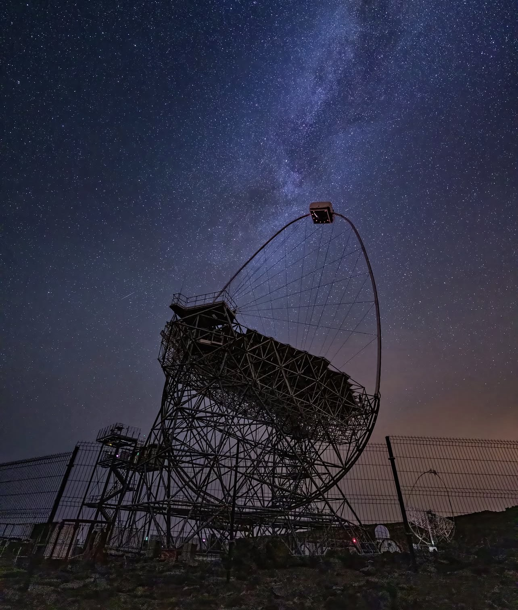

Kooperationsprojekte
Das IceCube Experiment
Das IceCube-Neutrinoobservatorium ist der größte Neutrinodetektor der Welt und befindet sich tief im Eis der Antarktis. Seine Aufgabe besteht darin, hochenergetische Neutrinos aus dem Weltall nachzuweisen. Diese nahezu masselosen Teilchen können große Entfernungen nahezu ungehindert zurücklegen und liefern wertvolle Informationen über extreme Ereignisse wie Supernovae, Schwarze Löcher oder aktive Galaxien. Der Detektor besteht aus mehr als 5.000 Lichtsensoren, die in einer Tiefe von bis zu 2,5 Kilometern im Eis installiert sind. Trifft ein Neutrino auf ein Teilchen im Eis, entsteht Cherenkov-Licht, das von den Sensoren erfasst wird. Aus diesen Messungen können die Richtung und Energie des Neutrinos bestimmt werden. Am DESY in Zeuthen wurden zahlreiche Detektormodule entwickelt und gebaut. Darüber hinaus beteiligt sich DESY an der Weiterentwicklung des Observatoriums, der Datenanalyse sowie am Ausbau zum IceCube-Gen2-Detektor. Hier mehr!

Das CTAO Experiment
Das Cherenkov Telescope Array Observatory (CTAO) ist eines der weltweit größten Projekte zur Erforschung hochenergetischer Gammastrahlung aus dem Weltall. Ziel des Observatoriums ist es, extreme astrophysikalische Ereignisse wie Supernovae, Schwarze Löcher, Pulsare und aktive Galaxien besser zu untersuchen. Da Gammastrahlung die Erdoberfläche nicht direkt erreicht, erfolgt der Nachweis indirekt. Trifft ein Gammaquant auf die Erdatmosphäre, entsteht ein Teilchenschauer, der schwaches blaues Cherenkov-Licht erzeugt. Dieses Licht wird von den Teleskopen des CTAO erfasst und ausgewertet. Das Science Data Management Centre befindet sich in einem Gebäude auf dem Campus des Deutschen Elektronen-Synchrotrons (DESY) in Zeuthen. Hier mehr!
